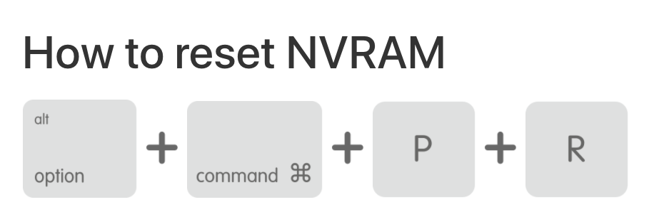

В NVRAM хранится такая информация, как настройки громкости, разрешение экрана, загрузочный диск, часовой пояс и информация о последнем падении ядра ОС. Если наблюдаются проблемы с чем-то связанным со звуком или изображением, то сброс NVRAM может помочь.
1. Выключить Mac;
2. Включить Mac;
3. Сразу же зажать Option + Command + P + R и держать 20 секунд, отпустить можно тогда, когда логотип Apple исчезнет во второй раз.
